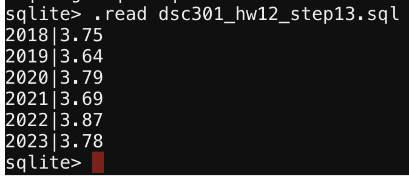
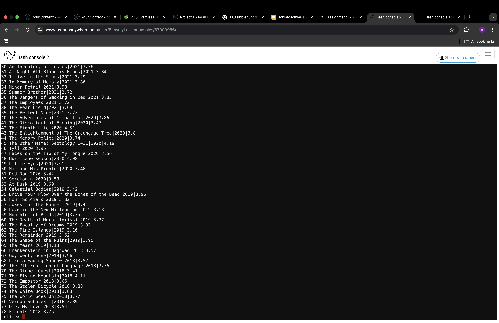

Assignment 12
Step 1
Below is what I learned.
- You can manipulate values to get other important information (such as averages)
- You can create html documents inside a linux based terminal.
- Actions made in temrinal CANOT be undone, if there is no backup.
Step 14 - Image & Desc.


Step 2
I learned the following.
- first this
- then that
- finally

Turn on the light

Turn on the light if this exercise made you bright.